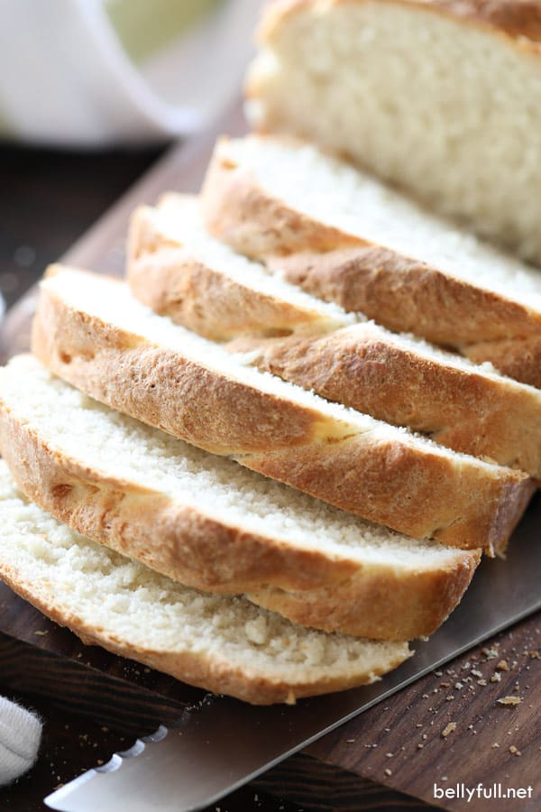

Homemade Sandwich Bread

Description
Here is a fantastic recipe for homemade sandwich bread. This is sure to please the whole family and your wallet. This recipe is beginner-friendly and a great intro into bread making.
Ingredients
- 6 cups all purpose flour, scooped and leveled
- 2 tbsp active dry yeast
- 2 tbsp granulated sugar
- 1 tbsp kosher salt
- 2 cups very warm water (about 120 degrees F)
- 1/4 cup extra-virgin olive oil, divided
Steps
- In a large mixing bowl, whisk together the flour, yeast, sugar, and salt. Then add in the water and 2 tablespoons of the olive oil; mix together with a sturdy wooden spoon until a shaggy dough forms.
- Turn out onto a clean surface and knead until the dough comes together and becomes smooth, about 4 minutes.
- Form a smooth dough ball and return to the mixing bowl. Cover with a clean tea towel and let rise in a warm place for 15 minutes.
- Divide the dough in half and form into two loaf shapes; place loaves into two standard-size loaf pans.
- Drizzle each with a tablespoon of the remaining olive oil, then slash the tops of the loaves about 1/4-inch deep with a sharp knife.
- Place loaves on the middle rack of a cold oven with a pan of hot tap water on the rack below it.
- Close the oven, set the heat at 400 degrees F, and start a timer for 40 minutes.
- After 40 minutes, remove the pans from the oven, carefully transfer bread out of the pans and onto a cooling rack to cool completely.
- Slice and enjoy!